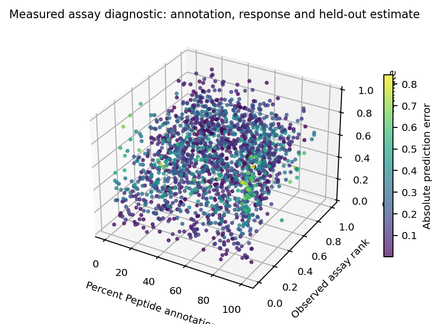
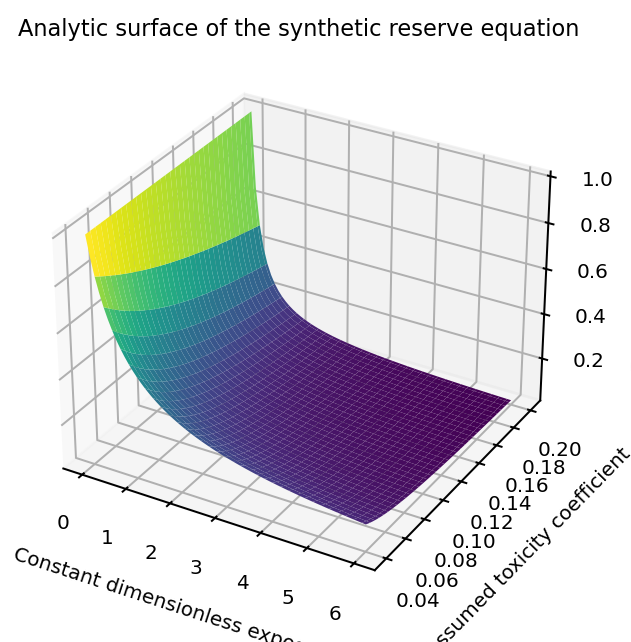

To Cure Cancer:
The Virtual Body
Michael Emanuel Glover · Developed in dialogue with Codex · 4 October 2026
The dissertation develops a virtual-body research programme through cells, niches, tissues, organs and the person. Its record includes 5,310 measured assay rows, ten held-out folds, seventeen gene-context reports, repaired nested-cell execution, four synthetic body trajectories and twenty-four parameter ledgers.
First-person purpose, inspectable results
The title states the research ambition. The executed results do not establish a cancer cure or a calibrated virtual human. Measured assay prediction, categorical software checks and synthetic dynamical calculations are labelled separately throughout.
Mathematical development includes sparse compatibility factors, simplex-preserving normalization, observational identifiability, conservative transport, categorical entropy and clone-invasion eigenvalues. The source record preserves unsuccessful comparisons and the synthetic model’s incompatibility between its constant-exposure stability threshold and assumed reserve constraint.

